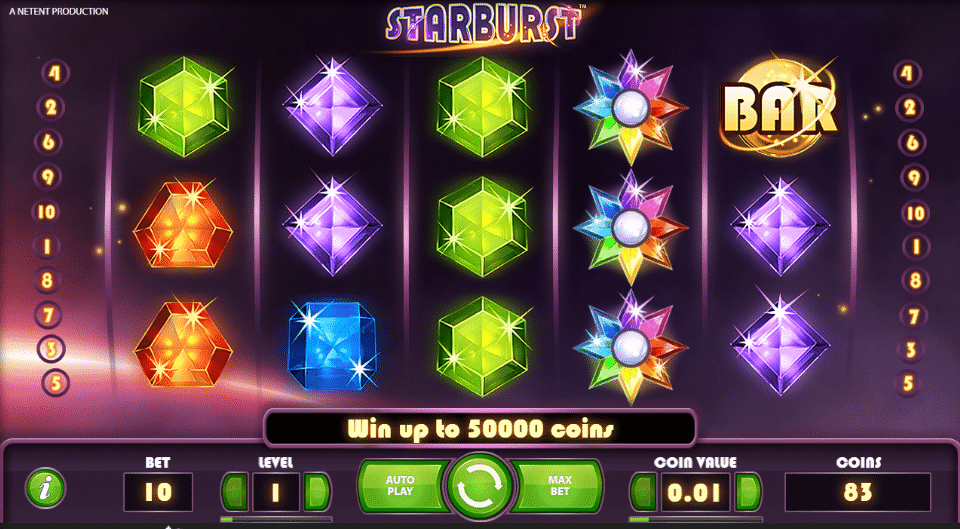

Traditional Gaming Versus Online Gambling
A Brief Overview
Nowadays, gambling isn't tied to an activity that is purely recreational although it is now taking an entirely new direction in industry and business. For some , it's a fun exercise, while for others , it's a lucrative business. Although gambling isn't all a brand new activity that has come into existence in the last century, it's been the preferred choice of our forefathers and historians trace to the time when this sport was popular to the prehistoric era. It is now known that even the earliest caveman gambled.
To a layman, gambling could refer to a sport that requires money as well as it is a simple way to increase the same. Situs Judi Slot Online Terpercaya While being part of this game means that you have to bet on something or another. The history of the game has seen numerous incidents in which not just money and possessions were staked in this sport, but also one's personal identity or the identity of one's family members was staked.
The gambling industry in the 21st century has been viewed with an unidimensional view. With our fast-paced lives and the dwindling time available for nearly everything, even leisure activities are limited to a certain time. In the modern world of, Internet comfortably snuggles in and takes on a place that is its own, making room for Online Gambling. In contrast to traditional gambling methods that require players to physically be present to gamble Online gambling offers us the convenience of playing from the comfort of our own homes or in a cafe.
To provide more information on the two types of gambling, let's take an in-depth look at the essential features of each. Traditional gambling is comprised of three types of games which are table games that include random games, or gaming equipment. The majority of the games in traditional gambling involves the use of money and converting it into chips in various denominations, and are later used in the game. The only game type that does not require the change of the cash to chips, is slot machines. In this case, the player has to put a quarter in the machine, and then push the lever. There are still games that allow cash to be deposited however, it is mostly restricted to games that have massive jackpots. The majority of these games have a minimum deposit amount is only to massive amount.
Gambling online, on contrary is a surprisingly enjoyable way to play the game. The main reason for its immense popularity is due to the convenience factor and possibility of having fun with the touch of the button. In addition, to draw more gamblers to online casinos, the site owners make their sites appealing by providing various reward schemes as well as additional benefits for its players. The variety of games available are available by accessing the site. In essence, the games that are available in this type of betting can be classified into two groups that require the software must be downloaded, the other games that can be played with out it.
Comparative Analyse of traditional Gambling as well as Online Gambling
While online gambling is growing in momentum however traditional gambling is the clear leader in the industry. Pros and cons exist for both types of gambling, and it is based on the preferences of every gambler on the best form that meets their needs.

In traditional gambling , where you is able to feel the adrenaline rising and tension on the nerves, this can be found in online gambling, to a certain extent. The excitement of winning and celebration is only available in traditional gambling. The motivation behind playing it over and over again is the excitement of winning and celebration, creating a rapid boost to businesses of casino proprietors. A single win can inspire thousands of others to stay in the game. Therefore, if we look at the pleasure, enjoyment and financial benefits of gambling, there is no doubt that traditional gambling will take the lead in it.
Gambling online however can be enjoyed by everyone, even people who reside in remote regions where access to the actual casino isn't a possibility. All it takes is a simple internet connection, and you're engaged in the excitement of gambling. Situs Judi Slot Online Terpercaya It allows you to leverage the power to play in both time and distance. Another benefit of gambling online could be the possibility to receive huge bonuses and payouts However, there is a risk of not paying all winnings to force gamblers to play for a long time. The reason to make players bet for longer periods is because generally, the longer you gamble, the chance of losing more money increase which means that casinos owners make more profit margins.
For business, traditional gambling is advantageous to casino owners. They have the right tools and strategies to let the gambler bet for a long time, which results in increased odds to the advantage of casino owners. For gamblers, however, traditional forms of gambling can result in loss because the profits are less than what is actually made. The payouts typically are typically five or six times the amount actually put at risk, however casinos pay less, and this results in a visible loss.
Conclusion
The perception of a gamblers is a unique experience that are not able to be assessed by critics. Different forms of gambling could differ in opinion, however the joy of sports can not be questioned in any type of gambling.
In contrast, gambling as a form of business can mean completely different from the owners of casinos. They'll have a totally different way of thinking in analyzing the two kinds of gambling.
In conclusion all in all, both types of gambling each have distinct benefits and drawbacks. Neither can be considered to be 100% perfect. It is entirely up to the player to select the various options that can satisfy his or her needs.